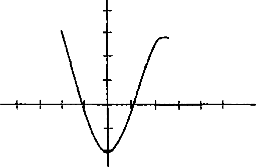

Ertesi sabah, pazartesiye denk geliyordu ve Gutshot’ta ge
çirdikleri yirmi ikinci sabah olmasının yanında kuşkusuz ki en kötüsüydü. Hayalarında hissettiği hassasiyetin yanı sıra Colinln tüm vücudu yürüyerek, koşarak, vurarak ve darbe alarak geçirdiği koca bir günden sonra acıyordu. Ayrıca başı ağrıyordu; gözlerini ne zaman açsa alev alev yakan şeytani ışınlar beynini eritiyordu. Önceki gece Paramedik (Adayı) Lindsey Lee Wells tıbbi internet sitelerinde kapsamlı bir araştırma yaptıktan sonra ona hafif berelenme ve “haya burkulması” teşhisi koymuştu. ÖC’ün ise “götleğin tekiyim ve Lindsey benimle bir daha asla konuşmayacakjit” hastalığı kaptığım açıklamıştı.
Gözlerini olabildiğince kapalı tutan Colin o sabah büyük zorluklarla banyoya girince Hasanın aynada kendisine baktığım gördü. Alt dudağı çok pis patlamıştıbir tomar tütün çiğniyormuş gibi duruyorduve sağ gözü şişmekten kapanmak üzereydi.
“Nasılsın?” diye sordu Colin. Hasan soruya cevap verircesine dönüp Colin’e, fena benzetilmiş suratım sundu.
“Tamam, olabilir,” dedi Colin duş musluğunu açmak için uzanırken. “Ama sen bir de diğer elemam gör.”
Hasan hafifçe gülümsemeyi başardı. “Bu olayları sil baştan yaşayabilecek olsaydım,” dedi devasa alt dudağı yüzünden yavaş ve boğuk konuşarak, “bırakırdım Şeytan Domuz beni ezerek öldürürdü.”
Colin kahvaltı için aşağı inerken Lindsey nin meşe masada oturmuş, bir portakal suyu şişesi çevirdiğini gördü. “Gerçekten konuşmak istemiyorum,” dedi Lindsey önlemini alarak. “Ama umarım hayaların yerli yerindedir.”
“Umarım,” dedi Colin. Duş yaparken şöyle bir kontrol etmişti. Eline aynı gelmişlerdi, tabii biraz daha hassastılar.
Hollis’in not olarak bıraktığı o günkü görevleri, Mabel Bartrand isimli bir kadınla konuşmaktı. “Of, olamaz,” dedi Lindsey, Colin ismi okuyunca. “O diğer bakım evinde, gerçekten yaşlandığında gittiğin evde yani. Bunu bugün kaldıramam. Yapamam... Tanrım. Boş verelim. Gidip yatalım hadi.”
“Ben varım,” diye mırıldandı Hasan etli dudaklarıyla. “Muhtemelen sohbet edecek birileri olması kadının hoşuna gider,” dedi Colin yalnızlığa dair deneyimlerini iyilik uğruna kullanmaya çalışarak.
İlk Aşk
“Of Tanrım, insana kendini nasıl suçlu hissettireceğini çok iyi biliyorsun,” dedi Lindsey. “Hadi gidelim.”
Mabel Bartrand, Hardee’s’ten bir sonraki sapaktan dönünce gidilebilen, Gutshot’tan yaklaşık yirmi beş kilometre uzaktaki bir destekli yaşam tesisinde kalıyordu. Lindsey yolu bildiğinden Cenaze Arabasını o sürdü. Yol boyunca kimse konuşmadı. Konuşulacak çok bir şey yoktu. Hem zaten Colin kendini saf, su katılmamış bok gibi hissediyordu. Ancak hayatı, III. Katherine’e dair tedirgin edici somya ve hafızasının noksanlığına dönebileceği kadar sakinleşmişti sonunda. Fakat başı tüm bunlara bir anlam veremeyeceği kadar çok ağrıyordu.
Resepsiyonda onları bir erkek hemşire karşılayıp Mabel’ın odasına kadar götürdü. Burası Sunset Acres’tan katbekat hüzünlüydü. Tek ses makinelerin vınlamasından geliyordu ve koridorlarda neredeyse hiç itimse yoktu. Ortak salondaki televizyonda bangır bangır bağıran hava durumu kanalını İtimse seyretmiyordu; kapıların çoğu kapalıydı; ortak salonda oturan birkaç kişi de ya şaşkın ya boş ya daen fenasıkorkmuş gibi bakıyordu.
“Bayan Mabel” dedi hemşire sanki çocukla konuşurmuş gibi. “Ziyaretçileriniz var.” Colin kayıt cihazım çıkardı. Önceki gün yaptığı ÖC itirafı kaydının üstüne kaydediyordu.
“Merhaba,” dedi Mabel. Çift kişilik yatak, bir sandalye, bakımsız bir ahşap masa ve mini buzdolabımn olduğu yatakhaneye benzer bir odada, deri bir koltukta oturuyordu.
Seyrelmiş kıvırcık beyaz saçları bir tür yaşlı kadın modeli verilerek kesilmişti. İki büklüm duruyordu ve yaşlı kokuyordu, neredeyse formaldehit gibi. Lindsey uzanıp kollarım Bayan Mabel’a dolayıp onu yanaklarından öptü. Colin ile Hasan kendilerini tanıttılar, Bayan Mabel gülümsedi ama konuşmadı.
Biraz gecikmeli olarak, “Gelen Lindsey Lee Wells mi?” diye sordu.
“Evet,” dedi Lindsey yanına oturup.
“Lindsey, canım benim, seni ne zamandır görmedim. Seneler oldu, değil mi? Ah, ne güzel oldu seni gördüğüm.”
“Ah Mabel teyze, seni de.”
“Çok zamandır aklimdasın, hep gelmeni istedim ama sen hiç gelmedin. Ne de güzel olmuşsun, nasıl da büyümüşsün. Saçların mavi değil bakıyorum artık. Nasılsın, canım?” “İyiyim, Mabel teyze. Sen nasılsın?”
“Doksan dört yaşındayım! Sence nasılım?” Mabel güldü, Colin de onunla birlikte. “İsminiz nedir?” diye sordu Coline, o da cevap verdi.
“Hollis,” dedi Lindsey’ye. “Dr. Dinzanfar’ın damadı mı bu?” Bayan Mabel öne eğilmiş, düzgün bir hat izlemeyen parmağıyla Hasan’ı işaret ediyordu.
“Hayır, Mabel teyze. Ben Hollis’in kızıyım; Lindsey. Dr. Dinzanfar’ın kızı olan Grace benim anneannemdi ve dedem de Corville VVells’ti. Bu Hasan, Gutshot’taki eski günler hakkında seninle konuşmak istiyor.”
“Ah, tabii tabii,” dedi Bayan Mabel. “Ara sıra aklım karışıyor.”
“Hiç sorun değil,” dedi Lindsey. “Seni gördüğüme o kadar sevindim ki anlatamam.”
“Ben de, Lindsey. Ne kadar güzelleşmişsin öyle. Yüz hatların oturmuş, bir hoş olmuşsun.” Lindsey gülümsedi; gözlerinde yaşlar olduğunu Colin ancak fark edebilmişti.
Lindsey, “Bize Gutshot’taki eski günlerle ilgili bir şeyler anlat,” deyince Colin bunun, Hollis’in dört sorusunu sormak için uygun bir durum olmadığını fark etti.
“Dr. Dinzanfar’ı düşünüyordum. O fabrikayı kurmadan önce market onundu. Daha küçüktüm o zamanlar, av köpeklerinin dizine geliyordum. Onun da tek gözü vardır, bu arada. Savaşa gitmiş. Bir gün marketteyim, babam bana bir peni verdi, ben de koşa koşa tezgâha gittim ve dedim ki ‘Doktor Dinzanfar, bir penilik şekerlerden var mı?’ O da başını eğip bana baktı, dedi ki, ‘Kusura bakma, Mabel. Gutshot’ta bir peniye şekerimiz yok. Bizdeld şekerlerin hepsi bedava şeker.”’ Onlar hikâyenin etkisindeyken Mabel gözlerini kapadı. Uyuyormuş gibi görünüyordu, yavaş ve ritmik nefesler alıp verdi ama sonra gözlerini açıp konuşmaya devam etti. “Lindsey, seni çok özlemişim. Bu eli tutmayı özlemişim.”
Bunun üstüne Lindsey açık açık ağlamaya başladı ve “Mabel teyze, gitmemiz lazım ama bu hafta tekrar yanına geleceğim, söz veriyorum. Seni... seni bunca zamandır ziyaret etmediğim için özür dilerim,” dedi.
“Önemli değil, canımın içi. Böyle şeylerle canım sıkma sen. Bir dahaki sefere geldiğinde on iki buçukla bir arasında gel ki sana jölemden vereyim. Şekersiz ama fena değil.” Mabel
sonunda Lindsey’nin elini bıraktı ve Lindsey öpücük yollayıp dışarı çıktı.
Colin ve Hasan içeride kalıp veda ettiler ve Lindsey’yi ortak salonda, can çekişen bir hayvan gibi haykırarak ağlarken buldular. Lindsey banyoya girip gözden kayboldu, Colin de Hasan’ı çıkış kapısına doğru takip etti. Hasan kaldırıma oturdu. “Burası bana fada geldi,” dedi. “Bir daha içeri asla girmiyoruz.”
“Nesi var?”
“Üzücü bir yer, komik tek bir yanı yok,” dedi Hasan. “Soktuğumun yerinin komik hiçbir tarafı yok. Ve çok pis içime dokunuyor.”
“Neden senin için her şey komik olmak zorunda?” diye sordu Colin. “Hiçbir şeyi ciddi anlamda umursamak zorunda kalmamak için mi?”
“Bok topaldan, Dr. Freud. Bir bok topağı yorganı dikmek ve beni psikanalize sokmaya çalıştığın her seferde üstüme örtmek istiyorum inan.”
“Öyle olsun, soytan efendi.”
Lindsey o sırada dışan çıktı, kendine gelmiş gibi görünüyordu. “İyiyim ve konuşmak istemiyorum,” dedi kimse ağzını açmadan.
O akşam Colin, Teorem’i bitirdi. Aslında hayli basit olmuştu çünkü birkaç gündür ilk kez aldım dağıtacak hiçbir şey yoktu. Lindsey odasına kapanmıştı. Hollis aşağı katta iş/televizyona kendini öyle bir kaptırmıştı ki Hasanın siyahımsı mor gözü
veya Colinln çenesindeki yumruk şekilli bereye dair tek bir laf bile etmemişti. Pembe Malikânede pek çok insan kendini kaybedebilirdi ve o gece pek çok insan aynen bunu yaptı.
Bitirmek âdeta haksızlık denilecek kadar basit olmuştu; artık dünyada Terk Eden olarak geçirdiği bir dönem olduğunu bildiğinden elindeki haliyle formül doğru olmaya çok yakındı. Sadece son halini verebilmek için azıcık üstünde oynaması gerekiyordu.
Herkes doğru çıkmıştı, yani Katherine Motsenzberger şöyle görünüyordu:

Dördüncü sınıfta yaşanmış bir aşk hikâyesi için mükemmel bir grafik.
Kalemini bırakıp yumruklarını sıkarak kollarını havaya ♦♦
kaldırdı. Tıpkı yarış kazanmış bir maratoncu gibi. Geriden gelip tüm hikâyeyi kaplumbağa için mahveden tavşan gibi.
Lindsey ve Hasariı aramaya çıktı ve onları sonunda oyun odasında buldu. “Bizim Teorem’i bitirdim,” dedi bilardo masasının pembe çuhası üstünde oturan, gözleri hâlâ şiş Lindsey ye. Hasan yeşil deri koltuğa gömülmüştü.
“Gerçekten mi?” diye sordu Lindsey.
“Evet. Sekiz saniye falan sürdü. İki hafta önce neredeyse bitirmişim aslında ama işe yaradığım fark etmemişim.”
“Kâfir,” dedi Hasan, “bu o kadar iyi bir haber ki neredeyse elini sıkmak için koltuktan kalkacağım. Ama o kadar rahat ki anlatamam. Yani şimdi bunu her şey için kullanabiliyor musun? Herhangi İki insan için yani.”
“Evet, sanırım.”
“Geleceği görmek için mi kullanacaksın?”
“Neden olmasın?” dedi Colin. “Kiminle çıkmayı düşünüyorsun?”
“Yo yo yo. Çıkmak olsun, kızlar olsun, öpüşmek olsun, trajedi olsun, senin yolundan gittim ve hiç beğenmedim, kardeşim. Ayrıca en yakın arkadaşım, romantik ilişkiler evlilik içermediğinde başına neler gelebileceğine dair ayaldi bir kıssa gibi. Tıpkı senin hep dediğin gibi, kâfir, her şey ya ayrılmayla ya boşanmayla ya da ölümle sonlanıyor. Sefillik seçeneklerimi boşanma veya ölüme indirgemek istiyorum, mümkünse orada
kalsın. Ama hani şimdi onu boş ver de, Lindsey Lohart’la beni yapsana. Onu Müslümanlığa döndürebilirdim gayet.”
Colin güldü ama eleştiriyi umursamadı.
“Benimle Colin’i yap,” dedi Lindsey kısık sesle, gözlerini çıplak dizlerine dikmişti. “Öteki Colin’i yani,” diye ekledi.
Colin de yaptı. Oturup dizlerinin üstüne bir kitap yerleştirdi, sonra defteriyle kalemini çıkardı. Değişkenleri yerlerine koyarken açıklama yaptı. “Yalnız şöyle bir şey var, aldatılmak, terk edilmek sayılır. Kızmanı istemiyorum; sadece Teorem bu şekilde işliyor.”
“İyi,” dedi Lindsey kısaca. Colin Teoremle o kadar çok uğraşmıştı ki sayılardan nasıl bir şey çıkacağını biliyordu fakat yine de her noktayı tek tek yerleştirdi.
Sonra ona gösterdiğinde Lindsey, “Bu ne ki?” diye sordu. “ÖC un seni terk edişi,” diye yanıtladı Colin.
“Yani işe yarıyor,” dedi duygusuz bir sesle. “Çok tuhaf... Üzülüyorum ama onun yüzünden değil. Ayrılmakla ilgili hissettiğim tek şey... rahatlık.”
“Rahatlık Terk Edenlere has bir histir,” dedi Colin hafiften endişeyle.
Lindsey bilardo masasından aşağı atlayıp Colirun yanına çöktü. “Galiba çekici bile bulmadığım götleğin tekiyle çıkmak istemediğimi yeni fark ettim de ondan, iki ayrı konu açığa çıkıyor Güdeklerle çıkmak istemiyorum ve kocaman kask tipleri çekici bulmuyorum. Gerçi bakımevinde bebek gibi ağladım, , o yüzden hissettiğim rahatlık geçici de olabilir.”
Hasan, Colin’den defteri aldı. “Gerçekten de soktuğumun şeyi işe yarıyor yani.”
“Evet, aynen öyle.”
“Gerçi seni bozmak istemem ama zaten bildiğim şeyleri kanıtlamış oldun sadece; futbolcular kafalarına göre gönül eğlendirirler ve Katherine’ler Colin’leri tıpkı Hasan’ların Hayvani Doygunburger’leri yuttuktan gibi terk ederler: doymak bilmeden, tutkuyla ve sık sık.”
“En büyük sorun bir ilişkinin çizdiği yayı öngörüp öngöremeyeceği,” diye açıklama yaptı Colin.
“Aa baksana,” dedi Lindsey aklına bir şey gelmiş gibi. “Hasaria sen oyun odasına gelmeden yaklaşık yirmi dakika önce ne yaptığım sorsana.”
“Ben oyun odasına gelmeden yirmi dakika önce ne...” “Of, söylediği her şeyi kelimesi kelimesine algılamasan olmaz sanki,” dedi Hasan. “İnternetteydim.”
“Neden internetteydin?”
Hasan patlak dudağıyla gülümseyerek ayağa kalktı. Yarımdan geçerken Colin’in kabarık saçlarını karıştırdı, sonra eşikte
duraksayıp, “Ben Babafingomu da alıp üniversiteye gitmeye karar verdim,” dedi Hasan ve Colin konuşmak için ağzım açtı fakat Hasan konuşmayı sürdürdü: “Sonbaharda iki ders alacağım sadece, o yüzden hemen parti yapmaya başlama. Yavaş yavaş alışmam lazım. Ne kadar mutlu olduğunu da sakın söylemeye kalkma. Biliyorum.”78
78 Ki gerçekten de o eylülün dokuzunda, sabah saat onda Hasan, İngilizce Kompozisyon isimli bir derse girecekti, hem de sevgili dostu, yoldaşı, muhtemel fantezi sevgilisi Yargıç Judy yle aynı saate düşse bile.